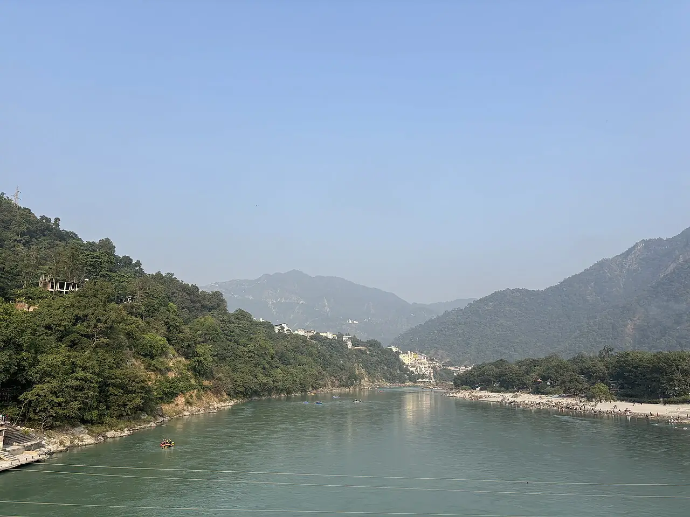

Rishikesh — Gange
Uttarakhand, Inde · kayak

Entre Shivpuri et Rishikesh, le Gange sort de l’Himalaya en une série de rapides réputés pour le rafting et le kayak d’eau vive. Des plages de sable servent de campements le long du fleuve.
- Lieu
- Uttarakhand, Inde
- Niveau
- Intermédiaire
- Activités
- kayak
- Type d'eau
- inland
- Coordonnées
- 30.13, 78.33 (position approximative du secteur)
Dangers à connaître
- Rapides puissants et eau froide descendue de l’Himalaya.
- Crues brutales pendant la mousson, de juillet à septembre environ.
Le conseil d'Ocean Buddy
Passe par un opérateur agréé, porte casque et gilet, et vérifie les dates d’ouverture.
Ouvrir dans Ocean Buddy Télécharger sur l'App Store
Source : Fiche Ocean Buddy · septembre 2026 · à vérifier localement.